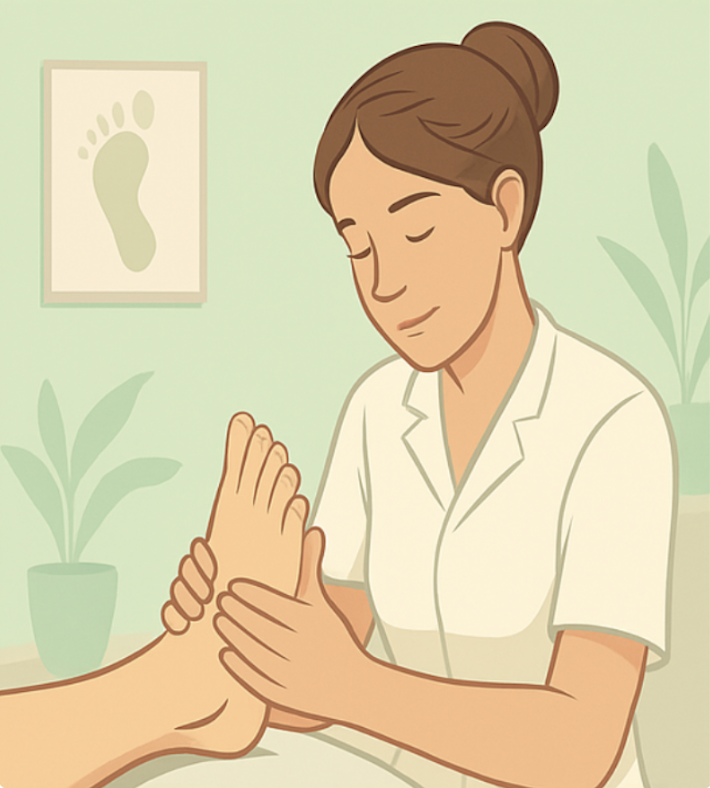

Podologia clínica e domiciliar em Santos - SP
Saúde dos pés com técnica, atenção e resultado real
Atendimento profissional para prevenção, tratamento e bem-estar, com foco em conforto, segurança e acompanhamento personalizado.
Sobre a profissional
Podologia com abordagem humana e clínica
A Dra. Mônica é especialista em podologia clínica, com mais de 10 anos de experiência. Seu trabalho é direcionado ao cuidado integral dos pés, com avaliação individual, técnica adequada e comunicação clara com cada paciente.
Formação: Bacharel em Podologia, com especialização em Pé Diabético.

Serviços
Tratamentos organizados por necessidade
Uma estrutura mais clara para ajudar o paciente a identificar rapidamente o tipo de cuidado que procura.
Prevenção e acompanhamento
4 serviços
- Podologia Preventiva
- Acompanhamento para pé diabético
- Podopediatria
- Podogeriatria
Tratamentos clínicos dos pés
6 serviços
- Tratamento de Calos e Calosidades
- Calcanhar (fissura)
- Tratamento de unha encravada
- Órtese para correção de unha
- Curativos e cicatrização
- Hidratação terapêutica
Laser e protocolos especializados
4 serviços
- Tratamento de verruga (olho-de-peixe) com laser
- Tratamento de onicomicólide com laser
- Laser ILIB com protocolo personalizado
- Curativo com Laserterapia
Bem-estar e suporte terapêutico
2 serviços
- Reflexologia podal + massagem de pernas
- Aplicação de bandagem neuromuscular
* Valores, protocolos e variações de sessão são definidos na avaliação clínica.
Avaliações
O que pacientes dizem no Google
Reputação construída com atendimentos reais. Abaixo estão avaliações publicadas no Google Maps.

Giselle Marques
★★★★★
Gostei muito do atendimento. Ela foi super paciente, me escutou com atenção e soube exatamente o que fazer. Me senti segura e bem cuidada desde o início. Fizemos um retorno depois e a evolução foi ótima. Com certeza vou voltar quando precisar e já indiquei pra minha mãe.
Ricardo Osias
★★★★★
Tivemos uma boa experiência com a Mônica. Minha mãe é diabética e estava com a unha do dedão encravada, com dor e inflamação. Ela foi super cuidadosa, usou instrumentos esterilizados e desencravou sem sangramento. Recomendo muito.

Andrea de Paula
★★★★★
Mônica é uma excelente profissional. Já faz alguns anos que ela cuida dos meus pés e de pessoas da minha família e amigos. Podem confiar. Indico de olhos fechados.

Ricardo Pereira
★★★★★
Atendimento super tranquilo, sem dor, e com preço justo. Com a órtese aplicada pela Dra. Mônica, minhas unhas praticamente pararam de encravar. O atendimento a domicílio também é um baita diferencial.

Andreia Santos
★★★★★
Podóloga Mônica Francine, excelente profissional. Adorei, super indico. Parece que troquei de pé. Com certeza chamarei novamente. Parabéns pelo profissionalismo.

Aline Moojen
★★★★★
Incrível. Profissional maravilhosa, super cuidadosa e eficiente. Recomendo muito.
Prova social
Instagram da clínica
Publicações reais com resultados, rotina de atendimento e dicas de cuidados.
Contato
Agende sua avaliação
Dra. Mônica Francine
Bacharel em Podologia e Especializada em Pé Diabético
Atendimento na clínica e também a domicílio (sob agendamento).